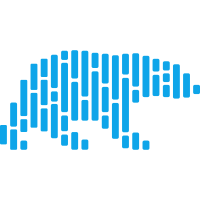

mikhail@samoilov:~$ whoami
[ OK ] profile loaded
Mikhail Samoilov
DS / ML Engineer # Yandex Search / Antispam
I build production ML systems, contribute upstream,
and study the places where research meets real infrastructure.
- status
- working at Yandex Search
- education
- Computer Science @ HSE
- background
- Biophysics @ MIPT
- location
- Moscow, Russia
mikhail@samoilov:~/work$ ls -lt --selected
total 5
mikhail@samoilov:~$ tree ~/stack -L 2
/home/mikhail/stack
 CatBoost
CatBoost
 Transformers
Transformers
 SQL
ClickHouse
SQL
ClickHouse

Polars Kafka
Kafka
 Airflow
Airflow
 Redis
Bash
Git
Redis
Bash
Git
3 directories, 12 tools
# icons stay monochrome; hover to reveal their native color
mikhail@samoilov:~$ cat metrics.log
04upstream_prs# Polars + PyTorch
02open_source_codebases
07oceanology_publication_records
01national_olympiad_prize
mikhail@samoilov:~/notes$ cat README.txt
01I started in biophysics. The habit of asking whether a model corresponds to something real never left.
02I like performance work, reinforcement learning, and systems where mathematics survives contact with production.
03Away from the main job, I send small patches upstream and keep notes for my future self.
mikhail@samoilov:~$ cat .links